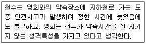
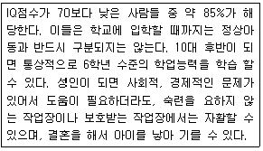
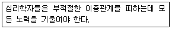
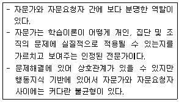
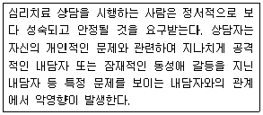
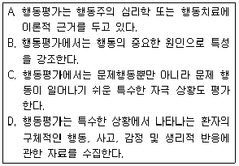
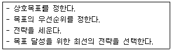
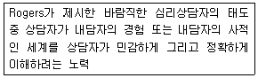
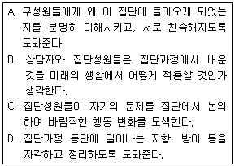

임상심리사-2급 (2009-05-10 기출문제)
1과목: 심리학개론
1. 사회학습이론에 입각한 성격에 관한 설명으로 옳은 것은?
- 사회학습이론에서는 성격이 인지과정이나 동기에 의한 영향을 인정하지 않는다.
- 사회학습이론에서는 관찰학습과 모델링을 통해서 보상받는 행동을 대리적으로 학습한다고 한다.
- 사회학습이론에서는 행동에 대한 환경적 변인의 독립적인 영향을 강조한다.
- 반두라는 개인이 자신의 노력으로 원하는 결과를 얻을 수 있다는 신념이나 기대를 자기존중감(self-esteem)이라고 하였다.
(정답률: 80%)

2. 강화에 요구되는 반응의 수를 어떤 평균을 중심으로 변화시키는 강화계획은?
- 고정간격계획
- 고정비율계획
- 변화비율계획
- 변화간격계획
(정답률: 48%)
3. 유아의 초기결핍이 지속적인 영향을 주는 영역과 가장 거리가 먼 것은?
- 언어능력
- 지적능력
- 운동기능
- 정서발달
(정답률: 80%)
4. 굶주린 개에게 종소리를 들려주어 조건형성을 하는 파블로프의 실험에서 무조건자극은 무엇인가?
- 종소리
- 먹이
- 침을 흘림
- 불빛
(정답률: 83%)
5. 다음 현상을 가장 잘 설명할 수 있는 것은?

- 절감원리
- 공변이론
- 대응추리이론
- 기본적 귀인오류
(정답률: 96%)
6. 프로이트의 성격구조에 대한 설명으로 틀린 것은?
- 이드는 쾌락원칙을 따른다.
- 초자아는 항문기의 배변훈련 과정을 겪으면서 발달한다.
- 성격의 구조 가운데 가장 마지막으로 발달하는 체계가 초자아이다.
- 자아는 성격의 집행자로서, 인지능력에 포함된다.
(정답률: 75%)
7. 태도의 3가지 주요 구성요소에 해당하지 않는 것은?
- 인지적 요소
- 감정적 요소
- 귀인적 요소
- 행동적 요소
(정답률: 67%)
8. 소거가 영구적인 망각이 아니라는 증거가 될 수 있는 것은?
- 자극 일반화(stimulus generalization)
- 변별(discrimination)
- 조형(shaping)
- 자발적 회복(spontaneous recovery)
(정답률: 90%)
9. 심리검사가 측정하고자 하는 내용이나 속성을 실제 얼마나 잘 측정하는지를 나타내는 개념은 무엇인가?
- 표준화
- 난이도
- 타당도
- 신뢰도
(정답률: 92%)
10. 달이 구름 속을 떠다니는 것처럼 보이는 현상은?
- 깊이지각
- 형태지각
- 가현운동
- 유인운동
(정답률: 42%)
11. 미네소타 다면적 인성검사(MMPI)와 캘리포니아 심리검사(CPI)의 비교설명으로 옳은 것은?
- MMPI는 구조화된 검사인 반면, CPI는 비구조화된 검사이다.
- MMPI는 투사검사인 반면, CPI는 질문지 검사이다.
- MMPI는 임상장면의 규준집단을 사용하여 개발된 반면, CPI는 정상인을 규준집단으로 개발된 검사이다.
- MMPI는 과거 행동에 중점을 둔 반면, CPI는 미래 행동에 중점을 두고 있다.
(정답률: 74%)
12. 과자의 양이 적다는 어린 꼬마에게 모양을 다르게 했더니 많다고 좋아한다. 그 아이의 논리적 사고를 피아제 이론으로 본다면 다음 문제 중 어디에 속하는가?
- 자기중심성의 문제
- 대상연속성의 문제
- 보존 개념의 문제
- 가설-연역적 추론의 문제
(정답률: 87%)
13. 아들러가 인간의 성격을 설명하면서 강조하지 않은 부분은?
- 열등감의 보상
- 우월성 추구
- 힘에 대한 의지
- 신경증 욕구
(정답률: 83%)
14. 다음 중 동조의 예로 가장 적당한 것은?
- 내가 좋아하는 스타가 광고하는 음료수를 산다.
- 어느 대통령 후보의 연설에 감동해서 그를 지지한다.
- 상관의 부당한 지시를 마지못해 따른다.
- 미니스커트가 유행이어서 나도 미니스커트를 입는다.
(정답률: 92%)
15. 성격 특성들 간의 관련성에 관한 개인적 신념으로서 타인의 성격을 판단하는 틀로 이용하는 것은?
- 기본적 귀인 오류
- 고정관념
- 내현 성격이론(implicit personality theory)
- 자기 기여 편향(self-serving bias)
(정답률: 58%)
16. 다음 중 내적 타당도를 위협하는 요소가 아닌 것은?
- 제3의 변수 개입
- 시험효과
- 측정 도구상의 문제
- 낮은 통계 검증력
(정답률: 41%)
17. Maslow의 욕구의 위계이론에서 제일 밑바탕에 있는 가장 기본적인 욕구는 무엇인가?
- 생리적 욕구
- 안정 욕구
- 소속감 욕구
- 자아실현욕구
(정답률: 97%)
18. '대학생들은 축구와 야구 중에 어느 것을 더 좋아하는가'라는 문제를 검증하는 경우처럼, 빈도나 비율의 차이검증에 가장 적합한 분석 방법은?
- t 검증
- F 검증
- Z 검증
- X2 검증
(정답률: 66%)
19. Freud의 심리성적 발달단계와 Erikson의 심리사회발달단계가 해당연령별로 바르게 짝지어지지 않은 것은?
- 출생~약 18개월 : 구강기, 신뢰감 대 불신감
- 약 18개월~약 3세 : 항문기, 자율성 대 수치감
- 약 3세~약 6세 : 생식기, 친근성 대 고립감
- 약 6세~약 11세 : 잠복기, 근면성 대 열등감
(정답률: 86%)
20. 피아제의 인지발달이론에서 대상영속성 개념을 처음으로 획득하는 시기는?
- 감각운동기
- 전조작기
- 구체적 조작기
- 형식적 조작기
(정답률: 78%)
2과목: 이상심리학
21. 다음 중 경계선 성격장애의 임상적 특징이 아닌 것은?
- 실제적 또는 가상적 유기를 피하기 위하여 필사적인 노력
- 타인에 대한 극단적인 이상화와 평가절하를 번갈아하는 불안정하고 강력한 대인관계 방식
- 반복적인 자살행동과 만성적인 공허감
- 자신의 중요성에 대한 과장된 지각과 특권의식 요구
(정답률: 52%)
22. 환각(hallucination)은 다음 중 어떤 부분의 왜곡인가?
- 지각
- 행동
- 사고
- 관계
(정답률: 79%)
23. 다음 중 알츠하이머형 치매에 대한 설명으로 틀린 것은?
- 기억 착오와 혼돈이 뚜렷한 특징이다.
- 알츠하이머형 치매와 밀접한 관련이 있다고 밝혀진 신경전달물질은 도파민이다.
- 가계에 따라 전달되는 경향이 있으며, 남성보다는 여성에게서 더 빈번히 발생한다.
- 뇌혈관 질환이나 비타민 B12 부족으로 인해 점진적인 기억과 인지장해를 보이는 경우에는 진단을 배제한다.
(정답률: 60%)
24. 다음 중 정신분열병의 양성증상에 포함되지 않는 것은?
- 망상
- 환각
- 와해된 언어
- 감정적 둔마
(정답률: 77%)
25. 성도착증의 유형에 관한 설명이 옳게 연결된 것은?
- 노출증 - 다른 사람이 옷을 벗고 있는 모습을 몰래 훔쳐봄으로서 성적 흥분을 느끼는 경우
- 관음증 - 동의하지 않는 사람에게 자신의 성기나 신체 일부를 접촉하거나 문지르는 행위를 반복적으로 나타내는 경우
- 소아 애호증 - 사춘기 이전의 소아를 대상으로 하여 성적 공상이나 성행위를 반복적으로 나타내는 경우
- 성적 가학증 - 굴욕을 당하거나 매질을 당하거나 묶이는 등 고통을 당하는 행위를 중심으로 성적흥분을 느끼거나 성적 행위를 반복하는 경우
(정답률: 82%)
26. 다음 중 DSM-4에서 분류하고 있는 이상하고 특이한 집단인 성격장애인 A군에 포함되지 않는 것은?
- 편집성 성격장애
- 분열성 성격장애
- 분열형 성격장애
- 회피성 성격장애
(정답률: 89%)
27. '외모가 중요해', '나는 언제나 다른 사람의 주의를 끌어야 해', '감정은 즉각적으로 직접 표현해야해' 등과 같은 인지도식을 가진 성격장애는?
- 편집성 성격장애
- 히스테리성 성격장애
- 자기애성 성격장애
- 강박성 성격장애
(정답률: 59%)
28. 불안장애의 대표적인 원인론 중 2요인 학습이론과 거리가 먼 것은?
- 모델링의 효과를 잘 설명한다.
- 공포 감소에 대한 노출치료의 이론적 근거를 제공한다.
- 2요인이란 고전적 조건형성과 조작적 조건형성을 각각 말한다.
- Mowrer가 주장하였다.
(정답률: 47%)
29. 다음 중 치매와 우울증의 증상 구분에 관한 설명으로 옳은 것은?
- 치매는 기억손실을 감추려는 시도를 하는데 반해 우울증에서는 기억손실을 불평한다.
- 치매는 자기의 무능이나 손상을 과장하는데 반해 우울증에서는 숨기려 한다.
- 우울증보다 치매에서 알코올 등의 약물남용이 많다.
- 우울증에서는 증상의 진행이 고른데 반해 치매에서는 몇 주 안에도 진행이 고르지 못하다.
(정답률: 50%)
30. 이미 존재하지 않는 신체 부분에 대한 환각으로, 사지를 절단한 후에 흔히 나타나는 것은?
- 반사환각
- 팬덤(phantom)현상
- 운동환각
- 신체환각
(정답률: 71%)
31. 분열성 성격장애(schizoid PD)의 주요증상에 해당하지 않는 것은?
- 친밀한 관계를 원하지도 즐기지도 않는다.
- 거의 항상 혼자서 하는 활동을 선택한다.
- 사고와 언어가 괴이하거나 엉뚱하다.
- 타인의 칭찬이나 비평에 무관심해 보인다.
(정답률: 63%)
32. DSM-4에서 알코올 의존과 알코올 남용을 구분하는 기준이 아닌 것은?
- 내성
- 금단증상
- 강박적인 음주패턴
- 다중 약물중독
(정답률: 71%)
33. 다음 중 주의력 결핍 및 과잉활동장애의 특성에 해당되지 않는 것은?
- 수줍음
- 산만성
- 학업문제
- 또래들과 어울리는데 어려움
(정답률: 95%)
34. 반사회적 성격장애의 일반적 행동특성과 거리가 먼 것은?
- 높은 충동성
- 목표 지향적 활동의 결여
- 공포 유발자극에 대한 과도한 불안반응
- 정서적 자극과 흥분, 스릴의 추구
(정답률: 75%)
35. 알코올 중독과 비타민 B1(티아민) 결핍이 결합되어 만성 알코올중독자에게 발생하는 장애로, 최근 및 과거 기억을 상실하고 새롭게 기억을 형성하지 못하는 인지손상장애는?
- 간질
- 혈관성 치매
- 헌팅턴 질환
- 코르사코프 증후군
(정답률: 83%)
36. 알코올 의존의 원인으로 틀린 것은?
- 생물학적 입장에서는 유전적 요인이나 알코올 신진대사 기능에서의 차이를 원인으로 본다.
- 사회문화적 관점에서는 음주에 대한 사회의 관대한 태도가 알코올 의존의 원인이라고 본다.
- 행동주의 입장에서는 알코올이 불안을 줄여주는 단기적 강화효과가 알코올 의존의 원인이 된다고 본다.
- 정신분석적 입장에서는 알코올 의존을 남성다움을 나타내는 한 방법으로 간주한다.
(정답률: 77%)
37. 다음 중 긴장형 정신분열증 환자의 특징적 증상이 나타나는 영역은?
- 사고형태
- 주의 및 지각
- 운동기능
- 정동
(정답률: 43%)
38. 자폐증에 관한 설명으로 옳은 것은?
- 자폐증은 발달장애의 한 유형이다.
- 자폐증 아동은 애착장애는 보이지 않는다.
- 자폐증은 아동 정신분열병의 일종이며 환각과 망상을 보인다.
- 자폐증 아동은 주변 사람들과 관계 형성에 어려움이 있으나, 언어구사능력에는 손상이 없다.
(정답률: 70%)
39. 다음은 무엇에 관한 설명인가?

- 가벼운 정신지체
- 중간 정도의 정신지체
- 심한 정도의 정신지체
- 아주 심한 정도의 정신지체
(정답률: 76%)
40. A양은 음대 입학시험을 앞두고 소리가 나오지 않는 증상이 일어났다. 다음 중 가장 가능성이 높은 진단은?
- 강박장애
- 건강염려증
- 전환장애
- 특정공포증
(정답률: 70%)
3과목: 심리검사
41. 심리평가를 위한 면담기법 중 비구조화된 면담 방식의 장점으로 볼 수 있는 것은?
- 면담자 간의 진단 신뢰도를 높일 수 있다.
- 연구 장면에서 활용하기가 용이하다.
- 중요한 정보를 깊이 있게 탐색할 수 있다.
- 점수화하기에 용이하다.
(정답률: 68%)
42. 웩슬러 지능검사에 대한 해석 시 주의해야 할 점이 아닌 것은?
- 동작성 검사와 언어성 검사 점수의 차이는 중요한 의미가 있다.
- 개인의 내적 분석을 통해 강점과 약점이 무엇인지를 알아낸다.
- 규준분석을 통해 다른 사람에 비해 얼마나 높은지를 비교한다.
- 단기기억력 등 특정 능력은 한 가지 소검사에서만 측정된다.
(정답률: 67%)
43. 다음 중 Luria-Nebraska 신경심리검사에 포함되지 않는 척도는?
- 운동
- 리듬
- 집중
- 촉각
(정답률: 57%)
44. 피검자가 매우 피곤하고 불안한 상태에서 웩슬러 지능검사를 실시할 경우 가장 부정적인 영향을 받을 가능성이 높은 검사는?
- 토막짜기 - 어휘문제
- 숫자문제 - 공통성문제
- 기본지식 - 바꿔쓰기
- 산수문제 - 바꿔쓰기
(정답률: 66%)
45. 검사-재검사 신뢰도 방법으로 심리검사의 신뢰도를 구할 때의 단점에 관한 설명으로 틀린 것은?
- 두 검사 사이의 시간 간격이 너무 길면 측정대상의 속성이나 특성이 변할 가능성이 있다.
- 반응 민감성에 의해 검사를 치르는 경험이 개인의 진점수를 변화시킬 가능성이 있다.
- 두 검사 사이의 시간 간격이 너무 짧으면 첫 번째 검사 때 응답했던 것을 기억해서 그대로 쓰는 이월효과가 있다.
- 경비가 절감되나 시간이 너무 오래 걸린다.
(정답률: 69%)
46. 특정 학업과정이나 직업에 대한 앞으로의 수행능력과 적응도를 예측하는 검사는?
- 성격검사
- 적성검사
- 흥미검사
- 사회성검사
(정답률: 94%)
47. 웩슬러 지능검사의 점수체계에 관한 설명으로 옳은 것은?
- 아동용(WISC)과 성인용(WAIS) 검사의 지능지수 산출방식은 다르다.
- 동일한 원점수를 얻어도 연령에 따라 지능지수가 달라질 수 있다.
- 11개 하위검사는 평균이 50점인 환산점수로 산출된다.
- 언어성 지능과 동작성 지능의 평균과 표준편차는 다르다.
(정답률: 77%)
48. MMPI의 2(D)-7(Pt)척도가 상승한 패턴을 가진 피검자의 특성과 가장 거리가 먼 것은?
- 불안, 긴장, 과민성 등 정서적 불안 상태에 놓여 있다.
- 자기 비판 혹은 자기처벌적인 성향이 강하다.
- 행동화(acting-out)하는 성향이 강하다.
- 정신치료에 대한 동기는 높은 편이다.
(정답률: 62%)
49. GATB 직업적성검사의 하위검사에 포함되지 않는 것은?
- 기구 대조검사
- 표식검사
- 종선기입검사
- 운동기능검사
(정답률: 56%)
50. 웩슬러 지능검사의 특징이 아닌 것은?
- 동작성 검사를 포함한다.
- 집단용 검사이다.
- 아동용 검사가 따로 있다.
- 언어성 검사를 포함한다.
(정답률: 97%)
51. MMPI와 비교할 때 성격평가 질문지(PAI)의 특징이 아닌 것은?
- 문항의 수가 더 적다.
- 임상척도의 수가 더 적다.
- 임상척도 이외에 대인관계 척도를 포함한다.
- 4지 선다형이다.
(정답률: 55%)
52. 지능을 구성하는 요인에 관한 Cattell과 Horn의 이론 중 결정화된 지능(crystallizedintelligence)에 대한 설명으로 옳은 것은?
- 비언어적 요인과 관련된 능력을 말한다.
- 후천적이기보다는 선천적으로 이미 결정화된 지능의 측면을 말한다.
- 나이가 들어감에 따라 낮아진다.
- 문화적 요인에 의해 더 많은 영향을 받는다.
(정답률: 49%)
53. MMPI 타당도 척도에 관한 설명으로 틀린 것은?
- 무반응 점수(?)에서 높은 점수가 검사의 후반부 문항에서 응답하지 않는 것 때문이라면 임상척도에 미치는 영향이 그리 크지 않다.
- 허위척도(L)은 자신을 좋게 보이려고 다소 고의적으로 사소한 단점마저도 부인하는 세련되지 못한 방어를 평가한다.
- 신뢰성 점수(F)가 T 65인 사람은 고의적으로 나쁘게 왜곡하여 대답했을 가능성이 있다.
- 교정척도(K)는 방어성과 경계심을 평가한다.
(정답률: 49%)
54. 기억 장애를 보이고 있는 환자에게 기억 및 학습능력을 평가하는데 가장 적합한 것은?
- Trail Making Test
- SCL-90-R
- Face-Hand Test
- WMS-R
(정답률: 49%)
55. 직업지도를 하기 위하여 실시해야 할 표준화 검사는?
- 지능검사
- 적성검사
- 흥미검사
- 인성검사
(정답률: 75%)
56. 문장완성검사(SCT)에 관한 설명으로 가장 적절한 것은?
- 심사숙고하여 떠오르는 생각을 기록하도록 해야 한다.
- 인격 심층에 관한 정보를 알 수 있는 검사이다.
- 완성되지 않은 문장을 완성하도록 되어 있는 투사검사 중의 하나이다.
- 상상력과 창의력을 알아볼 수 있는 검사이다.
(정답률: 79%)
57. 23개월 유아가 연령에 비해 체격이 작고 아직도 걷는 것이 안정적이지 않으며, 말할 수 있는 단어가 '엄마, 아빠'로 제한되었다는 내용을 주 증상으로 내원하였다. 이 유아에게 실시할 수 있는 검사로 적합한 것은?
- 그림지능검사
- 유아용 지능검사
- 덴버 발달검사
- 삐아제식 지능검사
(정답률: 92%)
58. 다음 중 신경심리검사에 관한 일반적인 설명으로 옳은 것은?
- 피검자의 인구통계학적 및 심리사회적 배경에 따라 반응이 달라진다.
- 신경심리평가에서는 전통적인 지적 기능평가와 성격평가는 필요하지 않다.
- 정상인과 노인의 기능평가에는 사용되지 않는다.
- 뇌손상은 단일한 행동지표를 나타낸다.
(정답률: 77%)
59. GATB 직업적성검사에서 검출되는 9개의 적성분야에 해당되지 않는 것은?
- 형태지각
- 사무지각
- 관계지각
- 손의 재치
(정답률: 62%)
60. 배터리 검사의 장점으로 옳지 않은 것은?(오류 신고가 접수된 문제입니다. 반드시 정답과 해설을 확인하시기 바랍니다.)
- 평가되는 기능에 관한 자료가 종합적이다.
- 검사의 구성에 따라서 개개 환자의 원래 기능수준에 대한 평가가 가능하다.
- 임상적 평가목적과 연구목적이 함께 충족될 수 있다.
- 배터리 검사는 다양한 심리검사를 실시하는 심리사의 채용을 촉진한다.
(정답률: 21%)
4과목: 임상심리학
61. 다음에 해당하는 심리학자의 윤리원칙은?

- 유능성
- 성실성
- 사회적 책임
- 전문적이고 과학적인 책임
(정답률: 62%)
62. 다음 중 임상심리학의 역사에 관한 설명으로 옳은 것은?
- 임상심리학의 발전에 최초로 가장 직접적인 공헌을 한 사람은 독일의 Wundt이다.
- 1910년대의 Witmer에 의해 표준화된 심리검사의 사용이 증가되었다.
- Binet와 Simon은 1896년에 최초의 심리상담소를 설립하였다.
- 임상심리학이 전문직으로서 인정을 받고 영역이 크게 확대된 계기는 제2차 세계대전이다.
(정답률: 83%)
63. 임상심리학자의 고유한 역할과 가장 거리가 먼 적은?
- 사례관리
- 심리평가
- 심리치료
- 심리학적 자문
(정답률: 78%)
64. MMPI에서 각 임상척도의 평균과 표준편차로 옳은 것은?
- 평균 50, 표준편자 15
- 평균 50, 표준편차 10
- 평균 100, 표준편차 15
- 평균 100, 표준편차 10
(정답률: 59%)
65. MMPI 임상척도의 제작방식은?
- 내적 구조접근 및 요인분석
- 내적 내용접근 및 연역적 접근
- 외적 준거접근 및 경험적 준거 타당도방식
- 직관적 방식
(정답률: 71%)
66. 다음은 자문의 모델 중 무엇에 관한 설명인가?

- 정신건강모델
- 행동주의모델
- 조직모델
- 과정모델
(정답률: 52%)
67. 임상적 면접에서 사용되는 바람직한 의사소통 기술에 해당되는 것은?
- 면접자 자신의 사적인 이야기를 꺼내는데 주저하지 않는다.
- 침묵이 길어지지 않게 하기 위해, 면접자는 즉각 개입할 준비를 한다.
- 폐쇄형보다는 개방형 질문을 주로 사용한다.
- 내담자의 감정보다는 얻고자 하는 정보에 주목한다.
(정답률: 82%)
68. 자기보고형 성격검사를 실시한 결과 의도적 왜곡 가능성이 높아 결과해석에 어려움이 있다. 다음중 이러한 의도적 왜곡을 최소화할 수 있는 검사는?
- 지능검사
- 신경심리검사
- MBTI
- 로샤검사
(정답률: 42%)
69. 다음 중 임상심리사의 윤리기준에 관한 설명으로 틀린 것은?
- 임상심리사는 자신의 전문 영역 밖의 실무를 절대로 해서는 안 된다.
- 실시와 해석에 자격이 있는 사람만이 심리 평가도구를 사용할 수 있지만, 경우에 따라서는 자격없는 사람이 검사를 사용해도 무방하다.
- 임상심리사는 전문적인 방식으로 치료적 관계를 구성해야 한다.
- 임상심리사는 자신의 수련, 경험, 학위 및 활동들을 잘못 나타내는 공적 진술을 피해야 한다.
(정답률: 55%)
70. 다음 상담자에게 효율적인 치료를 위해 가장 필요한 것은?

- 임상실습훈련
- 지도감독
- 개인적 심리치료
- 소양교육
(정답률: 78%)
71. 임상현장에 종사하면서 과학자-전문가모형(scientist-practitioner model)에 충실하기 위한 이유 또는 방안과 거리가 먼 것은?
- 임상심리학의 주된 영역 중의 하나가 연구이므로, 임상심리학자는 임상장면에 적용 가능한 연구방법론을 개발하고, 그 기술과 기법에 능숙한 임상가가 되어야 한다.
- 대부분의 연구는 집단에 초점을 두고 개인차가 무시되어 개인적인 특성이 상실되므로, 실험분석은 질적 분석과 논리적인 일반화 작업을 증진시켜야 한다.
- 임상심리학자는 일차적으로 과학자가 되어야하며, 임상 실제 활동에 대한 타당도를 제공해야하고, 연구를 통해 이를 규명해야 한다.
- 집단비교연구법은 임상적 의문점을 잘 해결해주어, 임상현장에 많은 기여를 하였다.
(정답률: 20%)
72. Beck의 우울증 인지행동치료에서 인지적 삼제(cognitive triad)에 해당되지 않는 것은?
- 자신
- 과거
- 세계
- 미래
(정답률: 62%)
73. 접수면접에서 반드시 확인되어야 할 사항과 가장 거리가 먼 것은?
- 인적사항
- 주 호소문제
- 내원하게 된 직접적 계기
- 주요 문제의 원인이 되는 것으로 추정되는 어린 시절의 외상경험
(정답률: 92%)
74. 다음 중 행동평가 방법에 관한 설명으로 틀린 것은?
- 자연관찰은 참여자가 아닌 관찰자가 환경 내에서 일어나는 참여자의 행동을 관찰하고 기록하는 방법이다.
- 유사관찰은 제한이 없는 환경에서 관찰하는 방법이다.
- 참여관찰은 관찰하고자 하는 개인이 자연스런 환경에 관여하면서 기록하는 방식이다.
- 자기관찰은 자신이 개인과 환경 간의 상호작용에 관한 자료를 수집하도록 한다.
(정답률: 81%)
75. 주의력 결핍-과잉행동장애(ADHD)는 상황을 종합적으로 분석하고, 목표를 계획하고, 실행하는 기능에 결함을 보인다고 한다. 뇌와 행동과의 관계에서 볼 때 어떤 부위의 결함을 시사하는가?
- 전두엽 손상
- 측두엽의 손상
- 변연계의 손상
- 해마의 손상
(정답률: 78%)
76. 다음 중 행동평가에서 강조하는 내용을 모두 짝지은 것은?

- A
- A, C
- A, C, D
- A, B, C, D
(정답률: 57%)
77. Cormier와 Cormier가 제시한 적극적 경청 기술에 해당하지 않는 것은?
- 질문
- 요약
- 반영
- 명료화
(정답률: 50%)
78. 행동의학에서 두통치료에 가장 권장되는 심리적 기법은?
- 바이오 피드백과 이완
- 심상훈련
- 인지치료
- 주의전환
(정답률: 85%)
79. 술을 마시면 구토가 나는 약을 투약하여 알코올 중독 환자를 치료하는 행동치료기법은?
- 행동조성
- 혐오치료
- 자기표현훈련
- 환권보상치료
(정답률: 90%)
80. 자문역할을 수행함에 있어 행사조직, 부모나 내담자와의 동반자 관계 개발, 특정 내담자에 적합한 과정 찾기 등이 목표가 되는 자문모델은?
- 조직(인간관계) 모델
- 조직(조직사고) 모델
- 조직옹호모델
- 과정모델
(정답률: 32%)
5과목: 심리상담
81. 노인상담에 관한 설명으로 틀린 것은?
- 상담자는 노인의 일반적인 의학적 상태에 주의를 기울인다.
- 상담자는 노년기의 전반적인 특성에 대한 지식을 갖추고 있어야 한다.
- 고부 갈등과 같은 가족 간의 갈등 문제에서는 다른 가족 구성원의 참여로 도움을 받을 수 있다.
- 노인은 다른 내담자와는 달리 보호가 더 필요하므로 상담자를 향한 의존을 허용한다.
(정답률: 87%)
82. 인터넷 중독의 상담전략 중 게임 관련 책자, 쇼핑 책자, 포르노 사진 등 인터넷 사용을 생각하게 되는 단서를 가능한 한 없애는 기법은?
- 자극통제법
- 정서조절법
- 공간재활용법
- 인지재구조화법
(정답률: 87%)
83. 다음은 사례관리의 단계 중 어디에 해당하는가?

- 사정하기
- 계획하기
- 조정하기
- 철수하기
(정답률: 49%)
84. 산업장면에서 검사선택 시 고려사항과 가장 거리가 먼 것은?
- 선발이나 승진 등의 의사결정 시에는 준거타당도를 검증한다.
- 검사의 선택은 후보가 될 만한 검사들을 폭넓게 찾아내고 검토한 후 이루어져야 한다.
- 직무수행의 속성이 다차원적일 때는 복수 검사보다는 단일 검사를 선택한다.
- 검사의 선택은 그 사용목적에 잘 부합하여야 한다.
(정답률: 71%)
85. 다음은 무엇에 관한 설명인가?

- 공감
- 진실성
- 긍정적 존중
- 예민한 관찰력
(정답률: 70%)
86. 합리적-정서적 치료 상담의 ABCDE과정을 바르게 나열한 것은?
- 선행사건-신념체제-결과-논박-효과
- 신념체제-선행사건-결과-논박-효과
- 결과-선행사건-신념체제-논박-결과
- 논박-선행사건-신념체제-결과-효과
(정답률: 92%)
87. 상담이론 중 주로 겉으로 드러나는 내담자의 증상이나 장애행동을 없애거나 바람직한 적응행동을 습득시키는 데 초점을 두는 상담접근법은?
- 인지치료
- 행동치료
- 정신분석치료
- 현실치료
(정답률: 80%)
88. 전화상담을 이용하는 내담자의 특성 및 상황과 가장 거리가 먼 것은?
- 부끄러움이 심하거나 대면상담을 꺼리는 상태
- 생활상의 이유로 직접 상담을 받으러 갈 수 없는 상황
- 절망적인 상황으로 인식하여 자살을 시도하려는 순간 이야기하고 싶은 상태
- 두려워하는 상황이나 자신의 핵심감정을 명료하게 이해하고 수용하는 상태
(정답률: 64%)
89. 합리적-정서적 치료에서 제시하는 비합리적 생각 중에 ｢자기 자신이 시도하는 일은 결과적으로 제대로 되지 않을 것｣이라고 믿는 생각은 어디에 해당되는가?
- 당위성
- 과잉 일반화
- 절대적 사고
- 부정적 예언
(정답률: 76%)
90. 내담자들이 보이는 행동이나 사고를 체계적으로 측정하는 방법으로 개인의 자연환경에서 행동을 평가하기 위해 내담자로 하여금 스스로 자신의 행동을 관찰하고 주간행동기록표, 일일활동일지, 자동적 사고 기록지 등을 작성하도록 하는 방법은?
- 임상적 면담법(clinical interview)
- 자기보고형 검사(self-report test)
- 자기감찰(self-monitoring)
- 생리적 측정법(physiological measurement)
(정답률: 68%)
91. 성폭력 피해자 심리상담 초기단계의 유의사항으로 틀린 것은?
- 치료관계 형성에 힘써야 한다.
- 상담자는 상담내용의 주도권을 가져야 한다.
- 성폭력 피해로 인한 합병증이 있는지 묻는다.
- 성폭력 피해의 문제가 없다고 부정을 하면 일단 수용해 준다.
(정답률: 67%)
92. 다음 중 심리상담에서 경청의 방해 요인이 아닌 것은?
- 상대방의 말에 포함된 단서를 포착하여 감정을 읽어주고 반응을 확인하는 것
- 상대방에게 전적으로 주의를 기울이기보다는 자기가 다음에 할 말을 생각하고 있는 것
- 자신의 역할이나 자기가 상대방에게 어떻게 보이느냐에 대하여 지나치게 신경을 쓰는 것
- 자신을 타인의 위치에 두는 공감적인 태도 없이 상대를 편견으로 판단하고 평가하는 것
(정답률: 61%)
93. 다음 중 집단상담의 장점과 가장 거리가 먼 것은?
- 심리적으로 상처를 입을 가능성이 줄어들어 치료속도가 빠르다.
- 다양한 성격의 소유자들과 접할 수 있다.
- 시간과 비용면에서 경제적이다.
- 새로운 행동을 현실 검증해 볼 수 있는 기회를 제공한다.
(정답률: 85%)
94. 게슈탈트 심리치료에서 강조하는 것이 아닌 것은?
- 지금-여기
- 내담자의 억압된 감정에 대한 해석
- 미해결 과제와 회피
- 환경과의 접촉
(정답률: 66%)
95. 정신분석적 상담접근에 관한 설명으로 틀린 것은?
- 정신분석에서는 꿈을 활용한다.
- 정신분석에서 내담자의 저항은 중요하지 않다.
- 내담자와 상담가의 관계는 전이과정으로 개념화된다.
- 정신분석적 치료의 목표는 무의식을 의식화하고 자아를 강하게 하는 데 있다.
(정답률: 56%)
96. 자기가 화가 난 것을 의식하지 못하고 상대방이 자기에게 화를 냈다고 생각하는 것은?
- 승화
- 투사
- 부정
- 퇴행
(정답률: 86%)
97. 다음 중 접수면접에서 자살의도를 보고한 내담자에게 취해야 할 조치로 옳은 것은?
- 자살의도에 대하여 그 다음 회기 때도 내담자에게 묻는다.
- 즉시 경찰에 알린다.
- 주 호소만을 다룬다.
- 차트에 적고 내담자의 사인을 받아 놓는다.
(정답률: 49%)
98. 신체적 장애 발생 시 거치는 심리적 적응단계에 대한 설명으로 틀린 것은?
- 초기에 외상 자체를 부정하는 것은 회복 과정을 방해하게 된다.
- 장애나 질병의 심각성과 정도를 이해하고 완전히 인정하게 될 때에는 우울해진다.
- 독립적으로 자기간호와 재활의 노력이 가능할 때 나타나는 반작용이 독립에 대한 저항이다.
- 충격은 외상 시 나타나는 즉각적인 반응이다.
(정답률: 47%)
99. 다음 중 집단상담자의 역할과 가장 거리가 먼 것은?
- 느낌보다는 지적인 측면에 관심을 불러일으킨다.
- 집단활동의 시작을 돕는다.
- 집단의 방향을 제시하고 집단규준을 발달시킨다.
- 의사소통 및 상호작용을 촉진시킨다.
(정답률: 93%)
100. 다음에 제시된 집단상담의 일반적인 과정을 바르게 나열한 것은?

- A → B → C → D
- A → D → B → C
- A → D → C → B
- C → B → A → D
(정답률: 78%)